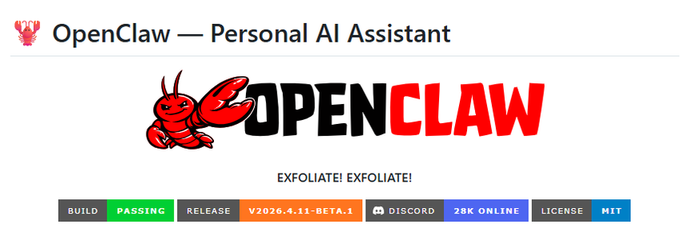
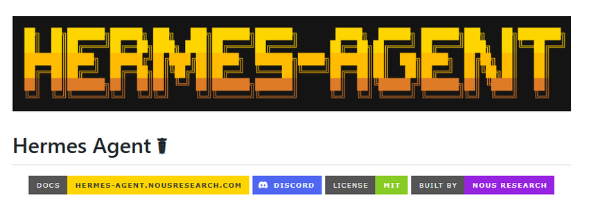

一文看懂：Hermes Agent 与 OpenClaw 全维度对比
公众号: data-miniprogram-nickname
|
作者: 智能体AI
|
日期: 20260412
最近，我在一个技术群里看到一场吵得不可开交的讨论。一边是用了OpenClaw的老用户，说它生态成熟、工具齐全，离开了根本没法干活；另一边是最近换到Hermes Agent的开发者，说自己的Agent越跑越聪明，一个月前要调20次工具的任务，现在8次就搞定了，Token成本直接腰斩。
两边都有道理，两边也都在鸡同鸭讲。
问题不在于谁赢了，而在于他们根本在比较两件不同的事情。一个在说"连接能力"，另一个在说"学习能力"。这就好比有人在争一辆货车和一辆跑车谁更好——答案永远取决于你要干什么。
我花了将近三周时间，把两个框架的文档、源码注释、社区Issue记录以及部分内部测试数据过了一遍，试图回答一个实际问题：在2026年，一个严肃的开发者或团队，应该如何在这两个框架之间做出选择？
本文不站队。我的目标是把两个框架的设计逻辑说清楚，让你能做出真正符合自己需求的决定。
在正式展开之前，先放一张核心对比速览表：
对比维度
OpenClaw
Hermes Agent
设计哲学
中心化网关 / 工具调度
闭环学习 / 自我进化
执行模式
线性预设工作流
动态 Agent Loop
技能来源
社区贡献（1.3万+）
自动生成 / 私有积累
记忆策略
Markdown 全量存储
分层筛选 / 向量检索
渠道接入
15+ 平台开箱即用
需自行集成
安全设计
RBAC + 事后防御
容器隔离 + 预执行扫描
部署成本
中等（本地/Docker）
极轻量（Serverless）
长期Token成本
随复杂度线性增长
自优化后显著下降
适合谁
企业多渠道自动化
个人深度进化 / 科研开发
一、设计哲学的分野——"操作系统" vs "数字分身"
我一直相信，理解一个技术产品最快的方式，不是看它的功能列表，而是问它的设计者：
你觉得你在解决什么问题？
这个问题的答案，几乎决定了一切后续的技术选择。
OpenClaw和Hermes Agent对这个问题的回答，走向了完全不同的方向。
1、OpenClaw：AI Agent的"操作系统"

OpenClaw的核心理念，用一句话概括就是："让AI接入一切，控制一切。"
它把自己定位成一个
中心化的网关（Gateway）
，最核心的价值主张是"连接"。微信、飞书、Telegram、Slack、Discord……它的目标是成为所有这些渠道和AI能力之间的通用适配层。你不需要为每个平台重新写一套逻辑，OpenClaw帮你做好了路由。
这个定位很聪明，也切中了大量企业客户的真实痛点。大多数想上AI的公司，第一个问题不是"我的AI够不够聪明"，而是"我的AI能不能接进钉钉/企微"。OpenClaw给了他们一个答案。
如果用一个比喻：OpenClaw像一个精密的"交通调度中心"。它的工作是确保每一辆车（每一个任务）能沿着正确的路线到达目的地。调度系统本身高度可靠、透明可审计，但车辆本身不会自我升级。
主要特性：
广度覆盖、本地优先、工程化、可控性。
2、Hermes Agent：自进化的"数字分身"

Hermes Agent的野心不是"连接更多"，而是"变得更聪明"
。它的核心概念叫
闭环学习循环（Closed Learning Loop）——每一次任务执行，都是一次学习机会。
它想打造的，不是一个高效的工具，而是一个
越用越懂你的长期伙伴
。今天你用它分析了一份市场报告，它会记住你的分析偏好；明天你让它写代码，它会调用昨天积累的代码风格偏好。随着使用时间增长，它对你的理解是在复利式增长的。
同样用一个比喻：Hermes Agent像一个聪明的"私人学徒"。它不只是完成你交代的任务，还会在完成任务的过程中主动总结经验，把反复出现的流程固化成自己的"操作手册"。下次遇到类似问题，它能直接拿出手册来用，而不是从头推演。
主要特殊：
深度进化、自我反思、长期记忆、复利效应。
3、真正的问题：它们在竞争吗？
表面上看，两者都是"AI Agent框架"，似乎直接竞争。但我越研究越觉得，它们更像是在不同坐标系里解题——OpenClaw解的是"如何让AI接入更多地方"，Hermes Agent解的是"如何让AI在一个地方变得更好"。
这个差异，是后续所有技术差异的根源。带着这个理解，我们来看架构。
二、架构逻辑的深度拆解
哲学决定方向，架构决定天花板。两个框架在底层设计上的差异，比功能列表上的差异大得多。
1、OpenClaw："中心辐射型"架构
OpenClaw的技术核心是它的
Gateway
，整个系统以此为中央控制平面，统一处理会话管理、消息路由和渠道适配。技术栈基于Node.js，这个选择本身就体现了它的定位——高并发I/O、生态丰富、部署便捷。
任务的执行依赖人工编写的Markdown技能文件。这个设计有它的合理性：流程透明、版本可控、出了问题能直接定位到哪一行。对于需要严格审计的企业场景，这种可预测性是刚需。
但硬币有两面。这套设计的问题在于——
它假设所有有价值的任务都是可预设的
。一旦任务的边界超出了预设范围，系统就会开始打补丁：加更多技能文件、拉长上下文窗口、增加工具调用次数。随着任务复杂度上升，Token消耗的增长不是线性的，是指数级的。
社区里有人把这种现象戏称为"上下文黑洞"——你往里填的越多，系统反而越难找到真正有用的信息。
2、Hermes Agent："闭环学习"架构
Hermes Agent的架构思路完全不同。它的核心不是一个中央网关，而是Agent自身的
执行循环（Agent Loop）
。这个循环做三件事：做任务、评估结果、改进自己。
最关键的机制是
自动技能提炼
。当一个复杂任务被成功完成，系统会分析整个执行过程，提取其中可复用的步骤，自动生成一个结构化的技能文档存入库中。下次遇到类似任务，Agent不需要重新推理整个链条，直接调用技能文档即可。
这就是为什么Hermes用户会看到工具调用次数随时间下降——不是因为任务变简单了，而是Agent把解题思路固化成了经验，
把"推理成本"转化成了"检索成本"
，而检索的代价远低于推理。
在多Agent协作上，两者也走向了不同路线：OpenClaw倾向于Peer-to-Peer模式，各Agent平行执行、相互通信；Hermes更偏向Supervisor模式，由主Agent统一调度子Agent，保证任务的整体一致性和可追溯性。
一个细节值得注意：Hermes的架构设计有一个隐含的前提——任务是反复出现的，重复才有复利。如果你的场景是高度一次性的随机任务，Hermes的学习优势就难以发挥。这也是它并非在所有场景都优于OpenClaw的原因之一。
三、记忆与技能——"死记硬背"与"融会贯通"
记忆系统是AI Agent最容易被忽视、却往往决定长期使用体验的核心模块。两个框架在这里的差异，是整篇文章里最值得深想一层的地方。
1、OpenClaw的记忆：信息的坟场？
OpenClaw用Markdown文件来存储记忆，主要是几个特定文件：SOUL.md存放角色设定，MEMORY.md记录交互历史。策略是"什么都存"。
短期来看，这个策略没问题。信息齐全，随时可以回溯。但用了半年、一年之后，问题就来了：文件越来越长，噪音越来越多，系统每次都要在海量信息里搜索真正有用的片段。某种程度上，它变成了一个
永不整理的收件箱
——里面什么都有，但你要找某一封邮件时，效率反而不如一个精心管理的空收件箱。
更深的问题是：OpenClaw没有内置的机制来判断
哪些记忆是有价值的
。所有信息等权存储，最近的一次闲聊和半年前你反复强调的工作偏好，在系统眼里没有区别。
2、Hermes Agent的记忆：懂得忘记的智慧
Hermes采用了
分层记忆栈
：常驻提示负责承载核心人格设定；SQLite数据库做会话级归档，支持结构化检索；向量数据库处理语义相似度检索，找的不是关键词，而是概念上相近的历史经验。
更重要的是，Hermes的设计哲学是"有限记忆"——不是什么都存，而是强制Agent在归档前做一次压缩和筛选。就像一个好的学生记笔记，记的不是课堂上说的每一个字，而是理解之后整理出来的核心要点。
这个设计的长期效益是显著的：随着使用时间增长，Hermes的检索精度不会下降，因为它的记忆库里噪音被持续过滤掉了。OpenClaw的检索效率则可能随时间下降，因为有效信息的密度在稀释。
3、技能生态：1.3万现成货 vs 私人定制
在技能这个维度，OpenClaw有明显的先发优势：ClawHub上有超过1.3万个社区贡献的技能，覆盖从天气查询到代码审查的几乎所有常见场景。对于刚开始搭建AI系统的团队，这是巨大的效率红利。
但这些技能有一个根本限制：
它们是为"通用用户"设计的，而不是为你设计的
。你的工作流里有哪些独特的习惯和偏好，社区技能不会知道，也不会自动适配。
Hermes走了另一条路：技能不是预置的，而是从你的使用行为中动态生成的。你反复做的事情，最终会被固化成一份只属于你的操作手册。这种技能没法在社区里下载，但也没有人能复制——
它的价值，在于独一无二。
记忆系统的背后，其实是对"人机关系"的根本性不同理解。OpenClaw把Agent当工具：工具要可控、要透明、要标准化。Hermes把Agent当伙伴：伙伴要理解你、要成长、要越来越懂你的习惯。你认为AI应该是哪种存在，几乎直接决定了你会更舒服地用哪个框架。
四、安全、部署与成本——企业采购的隐形门槛
功能好不好用是一回事，能不能进企业是另一回事。安全、部署成本和合规，是很多团队在实际落地时才踩到的坑。
1、安全：事后防御 vs 设计安全
OpenClaw采用标准的RBAC权限体系，配合审计日志。这套方案经过时间检验，对于大多数企业场景足够用。但它的思路本质上是
事后防御
——先运行，出了问题再查日志，定位责任再修补。历史上OpenClaw出现过几次因权限隔离不足导致的安全事件，根源就在于这套"信任优先、审计兜底"的设计哲学。
Hermes在安全设计上更激进，采用"安全内嵌于架构"的思路：工具调用在容器内执行，默认只读文件系统，每次工具调用前经过Tirith引擎的预执行扫描，异常操作在触发前就被拦截，而不是等执行完再审计。
特别值得一提的是Prompt Injection的防御设计。Hermes在Agent接收到外部输入时，会通过命名空间隔离确保外部指令无法篡改系统层面的行为规则。OpenClaw在这方面的防护相对薄弱，是已知的攻击面之一。
对于金融、医疗、政务等强监管行业，Hermes的安全设计明显更适合作为基础设施层。
2、部署与资源：谁更轻、谁更省
OpenClaw的软件体量中等偏上，推荐配置是4核8G以上的服务器，Docker部署是最常见方式。对于已有基础设施的企业，这不是问题，但对于个人开发者或小团队，是一笔不可忽视的成本。
Hermes在这方面非常克制，整体极其轻量，原生支持Serverless部署。在低配VPS（2核4G）上的实测，中等并发场景下运行稳定，内存峰值明显低于OpenClaw。
在Token成本上，Hermes的长期优势更显著。随着技能库的积累，它能把大量推理成本替换为检索成本。一个经过三个月训练的Hermes实例，处理同类任务的Token消耗大约是全新实例的40%～60%——这是一个会随时间复利增长的优势。
五、性能实测与开发体验——数据说话
以下数据来自社区公开基准、项目官方文档，以及部分本地测试。测试环境和任务类型对结果有较大影响，数据仅供参考，请结合自身场景判断。
1、性能：OpenClaw更稳，Hermes会自我优化
在单次任务延迟上，两者差异不大，都在可接受范围内。OpenClaw的优势在于高并发场景——它的Gateway架构为高吞吐设计，多渠道同时涌入的消息处理能力更强。
Hermes的性能优势在时序上更明显。对于重复性任务，随着技能库的积累，平均工具调用次数会持续下降，整体响应时间和Token消耗随之降低。对于高度重复的工作场景（如每日数据处理、固定格式报告生成），这种自优化效果在3～6个月内就能体感明显。
冷启动时间：Hermes明显优于OpenClaw，轻量架构的红利直接体现在启动速度上。
2、开发体验：OpenClaw更友好，Hermes更有深度
OpenClaw的文档质量是业界标杆级别的，中文社区活跃，示例覆盖面广，从零开始到跑通第一个Demo基本不超过两小时。对于没有深厚AI工程背景的开发者，这是巨大的优势。
Hermes的文档相对更技术向，部分高级功能的配置需要理解底层机制才能用好。换句话说，
入门门槛更高，但上限也更高
。社区里的Hermes用户画像整体偏向资深开发者和研究人员，讨论质量高，但新手支持相对不足。
在调试和可观测性上，OpenClaw提供了更完善的可视化Playground，方便实时查看执行链路。Hermes的可观测性工具正在快速完善中，链路追踪功能已基本可用，但视觉化界面的打磨程度还不及OpenClaw。
六、商业模式与社区生态——开源的"真假"
开源有很多种。有的是真正的社区治理，有的是"开源核心 + 闭源商业"的获客策略，有的是开了源但PR三个月没人看。搞清楚这些，才能判断一个框架的长期可信赖程度。
OpenClaw的商业版和社区版功能边界相对清晰，核心功能开源，企业级特性（高级权限管理、SLA保证、专属技术支持）在商业版里。这是一套成熟的开源商业模式，对用户而言是可预期的。
Hermes目前整体更偏向社区驱动，商业化边界还在探索中。好处是现阶段功能开放度高；风险是商业可持续性的不确定性——这个问题在选型时应该被正视，而不是忽略。
从GitHub数据来看，OpenClaw凭借先发优势积累了更大的Star基数，但Hermes的近6个月增长斜率更陡，Issue响应速度两者相近。ClawHub的1.3万技能是OpenClaw生态的护城河，短期内Hermes自生成的技能库在广度上无法匹敌——但这个差距的性质不同：广度是OpenClaw的优势，深度是Hermes的优势，各自服务不同需求。
七、选型指南——把抽象变成具体决策
聊了这么多，回到最实际的问题：我应该选哪个？
我反对"视具体情况而定"这种伪中立答案。以下是根据场景给出的明确建议。
1、选OpenClaw的情况
场景A：企业级多渠道自动化
——如果你的核心需求是同时接入微信、飞书、企微、Telegram等多个渠道，把AI打通进现有的工作流，选OpenClaw。它在渠道连接这件事上的工程完成度是Hermes目前无法比拟的。
场景B：需要快速交付可审计的自动化流程
——如果你的团队需要向上级或客户展示清晰的执行链路，OpenClaw的线性工作流设计让每一步都透明可追溯。
场景C：团队技术背景参差
——如果团队里有相当比例的非AI专业开发者，OpenClaw的文档和社区能帮他们更快上手。
2、选Hermes Agent的情况
场景A：个人深度工作伙伴
——如果你是开发者、研究员或知识工作者，希望AI助手能记住你的工作习惯、代码风格、分析偏好，并随时间持续进化，Hermes是唯一真正为这个场景设计的框架。
场景B：复杂非标任务处理
——如果你的任务高度定制化、边界模糊、难以预设流程，Hermes的动态推理能力比OpenClaw的预设技能文件更适合。
场景C：长期Token成本敏感
——如果你的任务具有重复性，且预算有限，Hermes的自优化特性能在3～6个月内产生可感知的成本下降。
3、还有一种答案：两个都用
这不是和稀泥。在一些复杂的企业场景里，存在一种架构思路：
Hermes负责大脑，OpenClaw负责手脚
。Hermes承接复杂的任务分析、规划和长期记忆，把决策结果交给OpenClaw，由后者通过成熟的渠道网络执行落地。
这种组合在技术上完全可行，需要一定的集成工作量，但对于已经在用OpenClaw且希望引入更强推理能力的团队，是一条值得探索的路径。
八、谁在赌更大的命题？
最后，想谈一个更长远的问题：这两个框架，谁在押一个更大的赌注？
OpenClaw押的是
连接的价值
——只要AI要接入现实世界的各种系统，就需要一个稳定的调度层。这个需求是真实的，市场是存在的，护城河来自于生态规模。
Hermes押的是
进化的价值
——它相信，未来最有价值的AI系统不是接入最多渠道的，而是最懂你、最能适应你的。这个赌注更激进，但如果它是对的，它的壁垒也更难被复制，因为每一个Hermes实例积累的经验都是私有的、不可迁移的。
对MCP、A2A这些新兴Agent通信协议，两个框架都在跟进，但方向有差异：OpenClaw更关注协议的互联互通，Hermes更关注协议层面的安全隔离。这个分野，某种程度上又回到了它们最初的设计哲学差异。
两者并不是零和游戏。2026年，AI Agent正在从"会用工具的机器人"向"能思考的伙伴"演化。OpenClaw代表了前一个时代的最优解，Hermes在押注下一个时代的方向。
你现在站在哪个节点，决定了你应该选谁。
九、总结
如果你已经读到这里，把上面所有内容简化成一句话：
OpenClaw 是「需要广度连接与工程化落地」的团队的最优解；Hermes Agent 是「追求深度进化与长期智能」的个体与团队的最优解。如果你同时需要两者，它们可以协同工作。
最后一个问题想留给读者：你们团队现在用的是哪个？踩过什么坑，踩出了什么心得？欢迎在留言区分享——这个话题，比任何基准测试都更有参考价值。